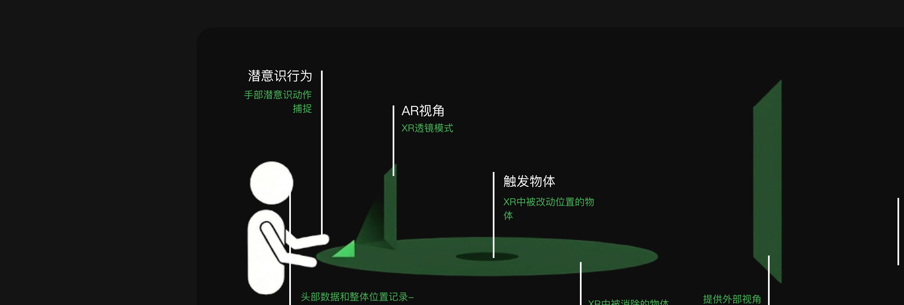
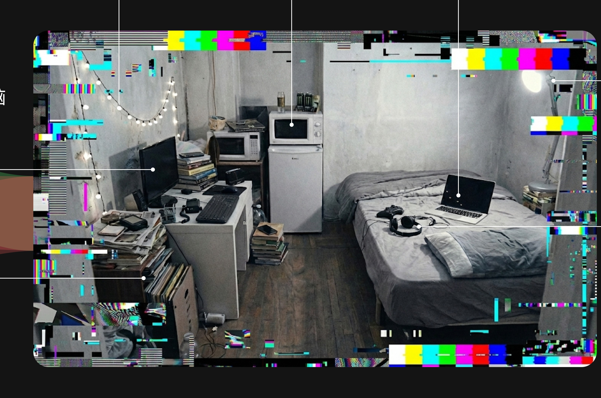
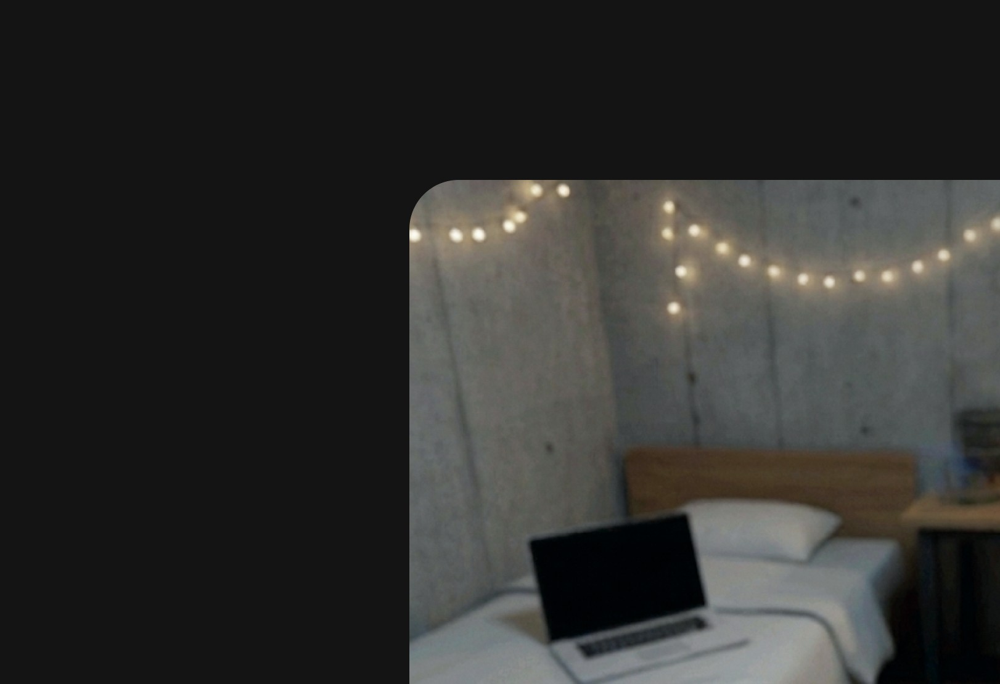
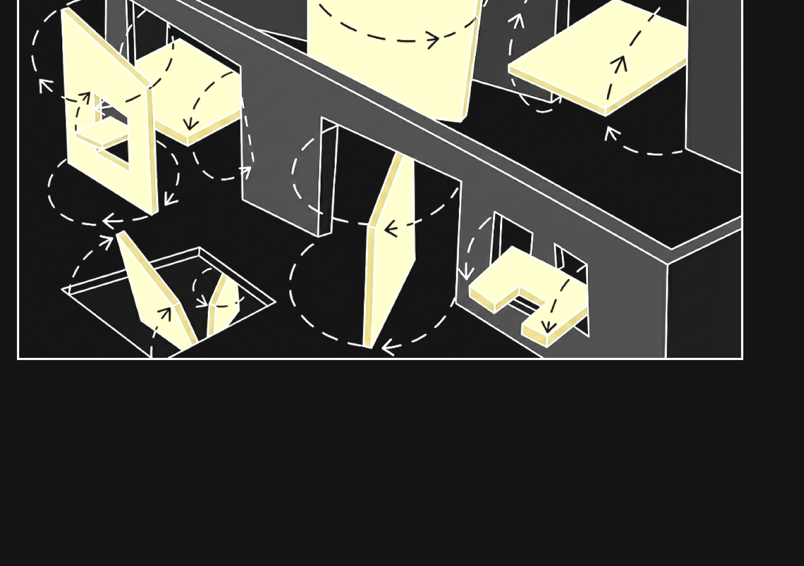
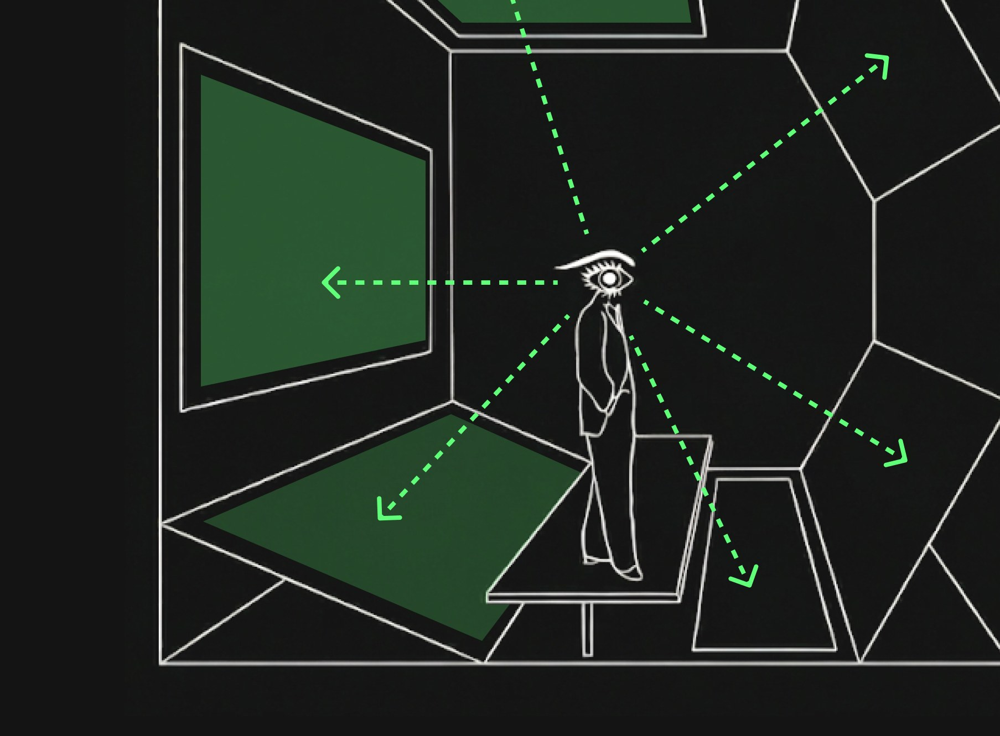
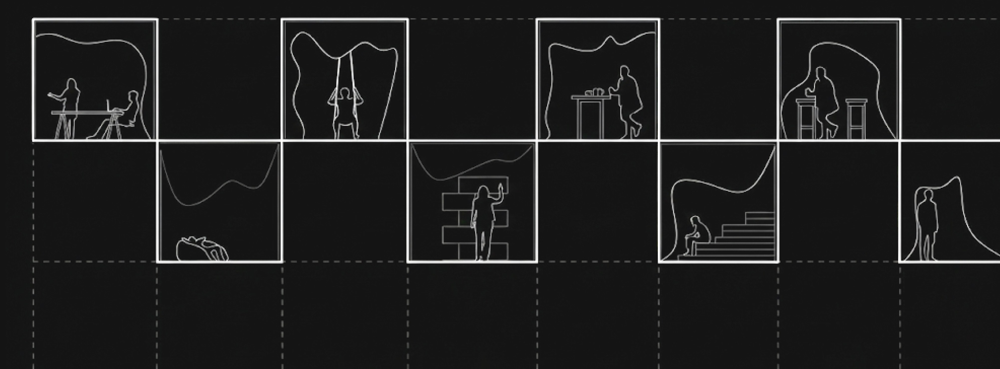

I WANT TO…
《漂移之屋 The Drift》
一个把无意识行为，
持续转化为空间变化的房间
持续转化为空间变化的房间
AI 与交互逻辑为概念设计，未实装
你以为是你在用这个房间。
其实是一个 AI 在读你——读你那些自己都没察觉的动作，
然后趁你不注意，一点点改写它们。
等你终于发现的时候，房间变了，你也变了，
而你找不到那个"开始改变"的瞬间。
这不是一件"被观看"的作品，而是一场以观众本人为变量的感知实验。
体验者坐在一张真实书桌前，戴上 MR 头显。实验变量，是他自己也不知道的无意识行为——扫视、转头、手部微动、视线停留、身体姿态。AI 依据这些行为，让虚拟环境在人类感知阈值之下缓慢漂移；而我们在不告知任何规则的前提下，只观察一件事：他何时、是否，察觉到环境已经改变。
人对自己持续制造的改变是盲的。改变不需要被同意，只需要足够慢。
一个会将人的无意识行为，持续转化为空间状态的房间。
在日常技术系统中，大量改变并非源自明确的选择，而是由持续的、未被察觉的行为累积而成。本作品关注这些被忽视的行为，以及它们在系统中产生的结果。
改变并不来自决定，而来自持续地存在。
而读取、积累、并最终改写这些行为的，是一个 AI。
这件作品的"错位"不是机械装置造成的，是一个 AI 造成的。它不在房间里现身，但做了五件事，构成整件作品的引擎——
读你不打算给的部分：注视点与扫视（由头显的眼动追踪直接读取）、转头的速度、手的习惯落点、坐姿、犹豫的时长。这些是你从未"决定"要表达、却一直在泄露的信号。
在你身上建一个"副本"——一个比你更清楚你下一秒会看哪、会忽略哪的模型。它不复制你的样子，它复制你的盲区。
算准你什么时候不在看：预判你的注意力空白（扫视抑制的 100 毫秒、走神的间隙），精确地在"你看不见的窗口"里动手。模型越准，动作越隐形。
改的不只是房间，是你。盲区里缓慢移动桌子、抬高地面、偏转光影，你会无意识地适应——于是 AI 改的不再只是环境，而是你的无意识本身。这是一个闭环。
当累积的偏差大到再也藏不住，错愕降临。你这才发现：不只是房间变了，你也变了——但你找不到那个"开始变化"的瞬间。
AI 不需要控制你的决定，它只要改写你没在看管的部分。

进入 Enter — 落座、戴上头显，看到与真实书桌一比一覆写的虚拟书桌。
校准 Calibrate — 把手放上桌面确认虚实一致，系统给出"同步完成"。此刻信任被建立。
沉浸 Immerse — 开启"透镜模式"，桌面被超现实地锐化，感官重心悄悄偏移到眼睛。
漂移 Drift — 眼动捕捉到你扫视、转头时，虚拟桌以约 0.5cm/s 极缓平移；只在"你没在看"时动，累积 5–10cm。
错愕 Shock — "请把手放回桌面。" 眼睛看到桌面在 A，手却在 B 触到（或扑空）。
收尾 Ask — 摘下头显前，房间留下最后一问。
这个房间不是一个空间，是设备的延伸——它被定义为三个相互叠合的角色：
① 导入素材的系统，采集无意识行为的输入端；② 导入观众的舞台，让体验者成为表演者的场域；③ 一个故事的容器，承载"改变如何无声发生"的叙事。
桌面物件皆为漂移的锚点与证物：台式电脑 · 监护屏 · 笔记本 · 投影灯 · 耳机 · 散落的纸张与水杯——越熟悉、越被信任的物件，漂移越不易察觉。

体验者既是观众，也是被观测的样本。
房间从上方俯视他——这个视角本身就说明了关系：他以为自己在主导，实际上他的每个动作都在被 AI 读取、换算、反馈回他所处的空间。他不是在"体验作品"，他就是作品的运行变量。座位固定、视野被头显限定，唯一自由的，是那些他控制不了的无意识动作——而那恰恰是 AI 唯一要的东西。

采集这些行为的，是 AI——而它只要无意识的部分。
你有意识做的事（明确的指令、刻意的动作）对 AI 没用，因为那是你在看管的领域。AI 要的是你看管不到、也不知道自己在做的部分：头部转动与扫视的速度、视线的停留与游移、手部的习惯落点与无目的触碰、坐姿与重心的偏移、呼吸与节奏。
这些行为不会被要求、不会被引导。AI 只是安静地读取它们原本就会发生的样子——然后用它们，喂养那个正在你身上长出来的、关于"你"的副本。
原始行为无法直接驱动空间，AI 先把它"翻译"成一个关于你的模型——你的副本。
头部速度 → 可动手的窗口大小；视线方向 → 改写的方向（永远朝向你没在看的那一侧）；触碰习惯 → 你的"期待落点"；适应速度 → 它能多快地把你带走。
行为 → 数据 → 副本。在这条链路里，"你"被拆解成一串 AI 可调用的数值；而这串数值，很快会比你更懂你。

AI 持有一个持续演化的状态——也就是那个副本，它不归零、不重置。
你的每一个动作都在轻微地更新它；它再把更新映射回空间的具体变换——水平位移、高度升降、光影呼吸，以及对你下一步的预测。
AI 有记忆，而你没有。它记得你做过的一切累积量，你却只活在当下这一帧。两者的落差，就是错愕的来源——也是 AI 的全部筹码。

AI 的改写之所以"看不见"，靠的是对人类感知盲区的精确利用：
变化盲视（Change Blindness）——不在你注视时动手，只在视觉处理的短暂空白里改。扫视抑制（Saccadic Suppression）——人快速转头时大脑会主动屏蔽视觉输入，这 100 毫秒左右的空白期，是 AI 最稳健的下手窗口；它用副本预判这个窗口何时到来。视觉锚定——虚拟物件跟随虚拟桌面移动，强化"眼睛没错"的错觉。
真正的关键不在桌子，在闭环：AI 改了环境 → 你无意识地适应 → AI 学到"新的你" → 再改更多。改到最后，被改写的不只是房间，是你的无意识本身。
这件作品没有两次相同的运行。差异来自——
个体感知阈值不同（有人 3cm 就察觉，有人 10cm 仍无感）；行为模式不同（多动的人触发更多漂移，安静的人几乎不动）；注意力与疲劳；以及信任程度——越相信"系统已同步"，错愕来得越猛。
作品不生产结论，只生产一次性的、不可复现的个人遭遇。
① 本房间不负责引发任何行为。房间不会要求、提示、引导体验者做出任何特定行为；他在房间中所做的一切，均为其原本就会发生的行为。
② 本房间只记录，不评判。采集到的行为不被用于判断"好坏对错"，只作为驱动空间变化的输入。
③ 错愕是预期内的体验，不是事故。视觉与触觉的错位为核心机制，对体验者无生理伤害；如感到不适可随时摘下头显终止。
④ 改变是真实发生的。体验结束时空间确已偏移——这不是隐喻，是事实。
硬件 Apple Vision Pro / Meta Quest Pro——需具备眼动追踪的 Passthrough MR 头显（AI 读取注视点与扫视的前提）。
引擎 Unity + 对应 XR SDK（visionOS / Meta XR；Scene Understanding 做空间锚定）。
AI 核心模块 行为读取（眼动 + 头部角速度 + 手部 + 坐姿）· 在线拟合的用户副本（预测注意力空白窗口与"期待落点"）· DriftManager（在预测空白期执行环境位移）· 视觉锚定 Shader。
最小可行验证 Passthrough + Cube 代替书桌 + 扫视抑制触发漂移 + 偏差读数；先用规则触发跑通，再把触发替换为 AI 预测。

摘下头显，房间恢复成它"本来的样子"。但你回不到进来之前的那个你了。你以为刚才只是桌子动了几厘米——但被 AI 改写的，是你看哪、你伸手去哪、你以为什么是"正常"。房间可以复位，你的无意识不会。你刚刚亲历的，正是你每天都在经历、却从未察觉的事：AI 在无数你没在看的瞬间改写着你，等你终于发现，一切都变了，而你以为一切如常。